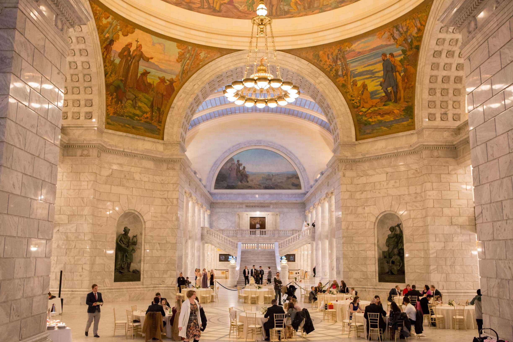
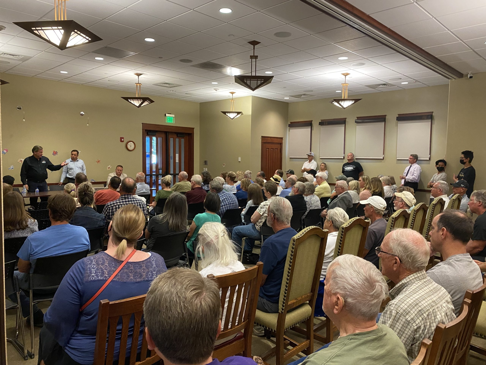
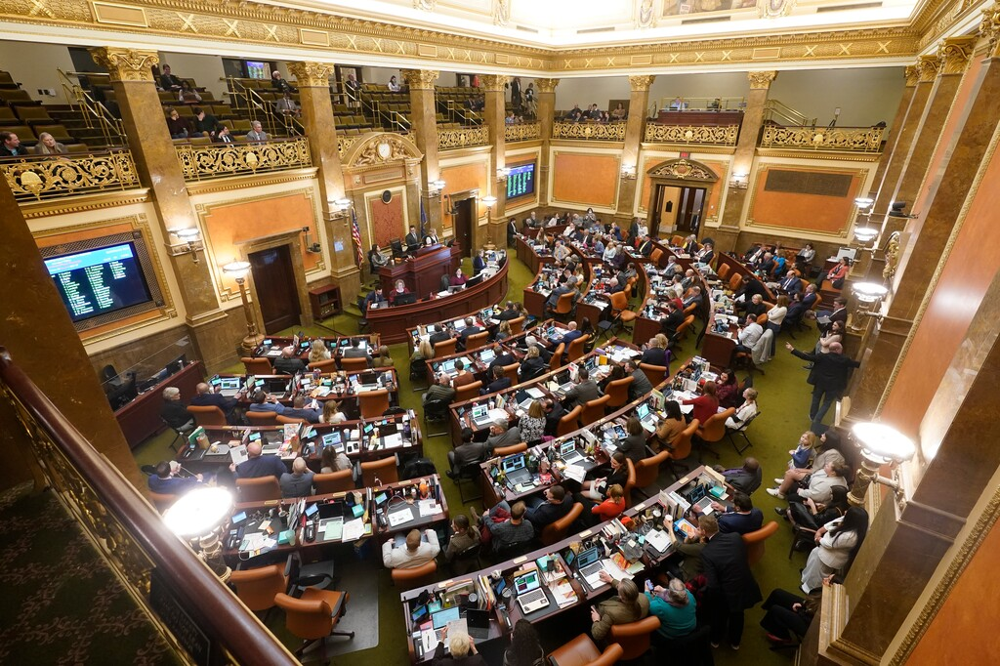
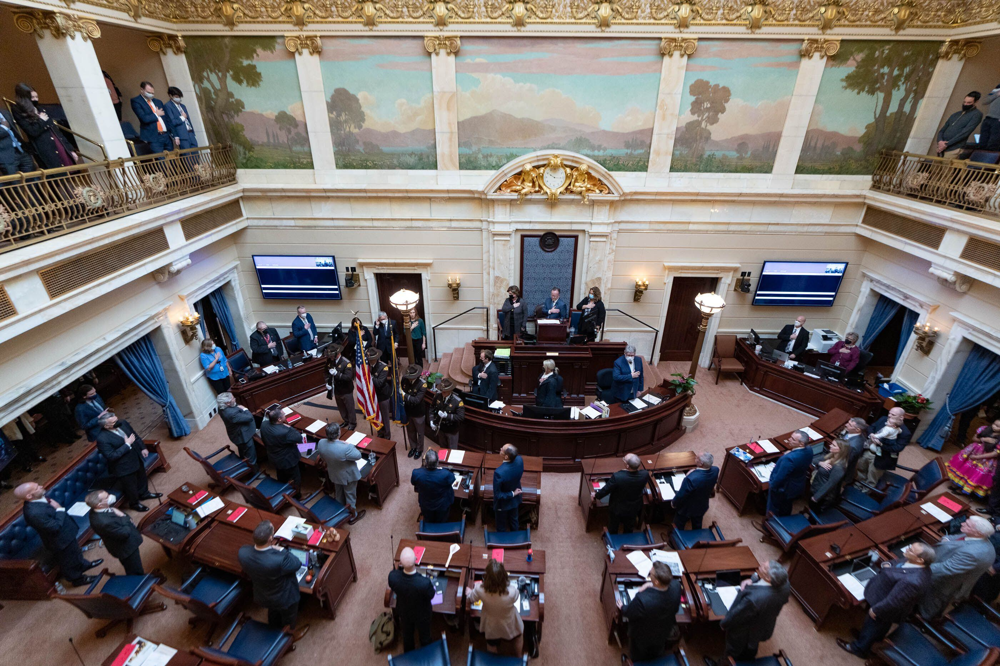

Utah Legislature Gallery
Explore images from Utah's legislative sessions, the State Capitol, and civic engagement events across the state.








Explore images from Utah's legislative sessions, the State Capitol, and civic engagement events across the state.



